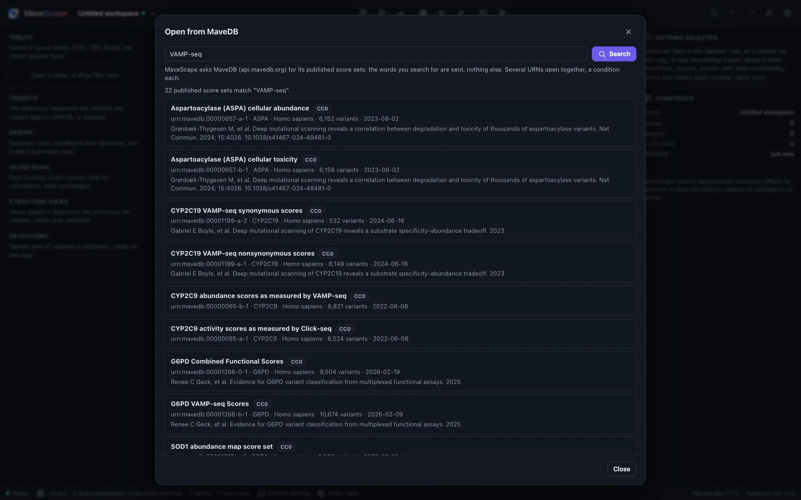
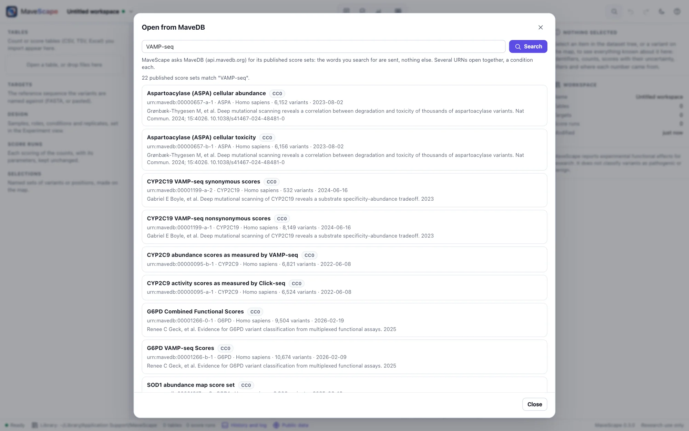
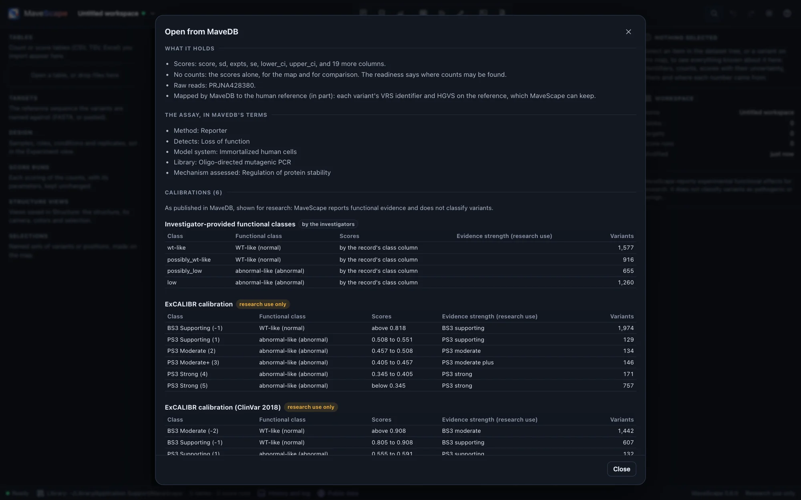
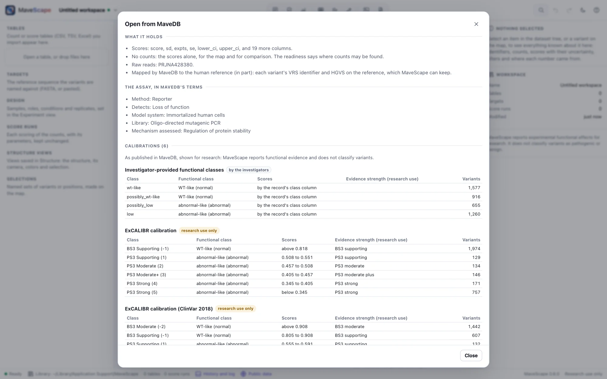
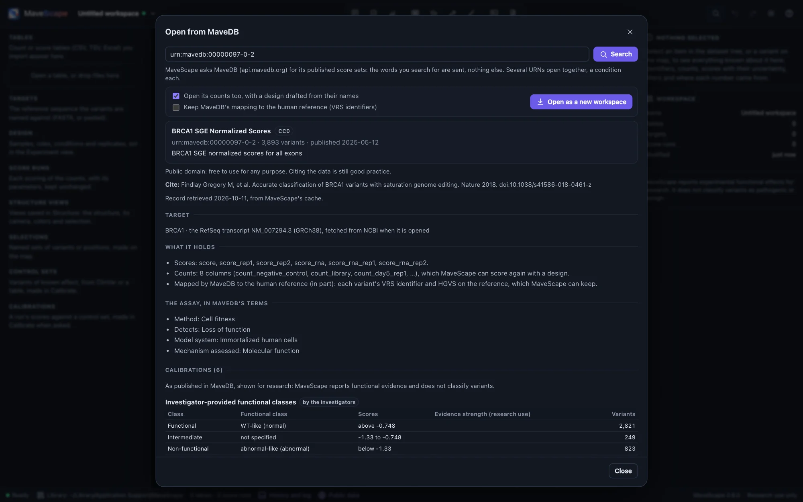
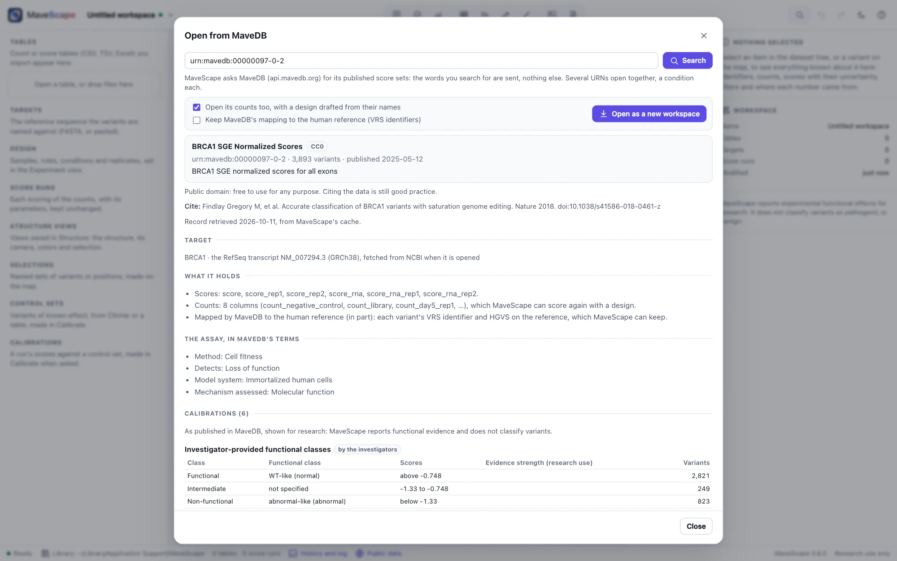
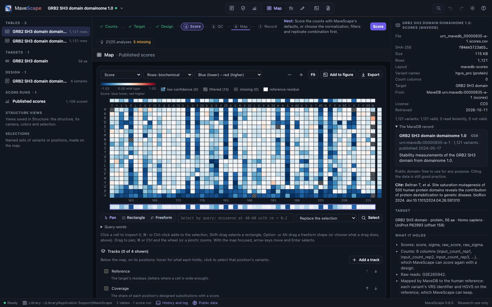
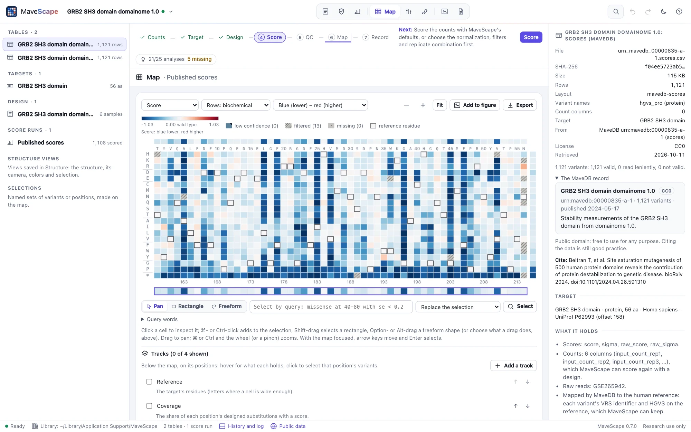
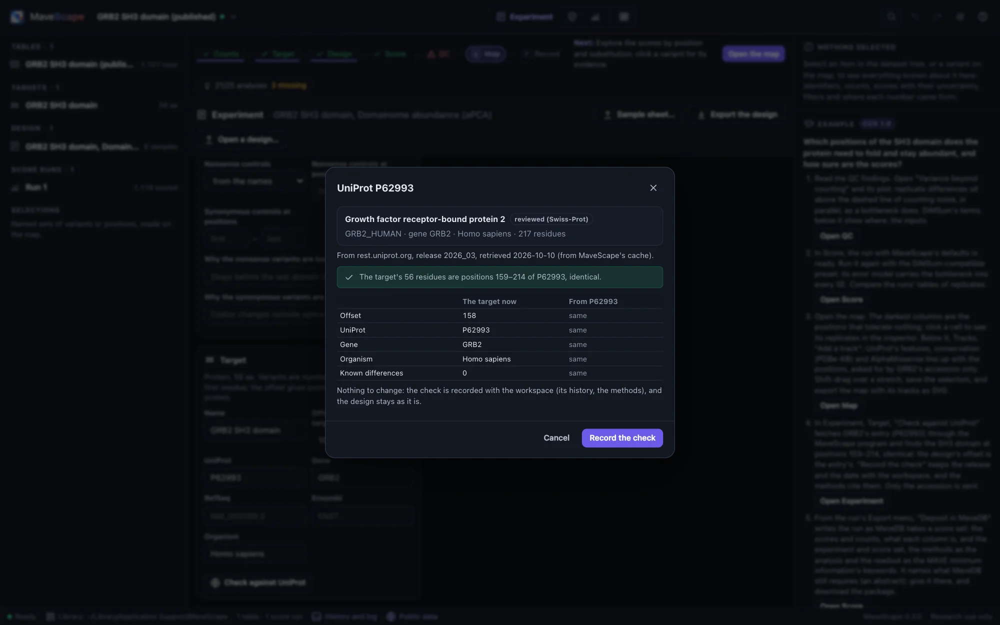
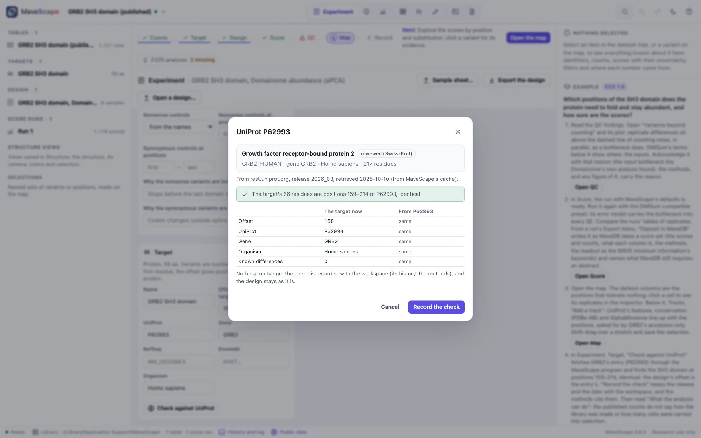

Public data
Your files never leave your computer. MaveScape reaches the internet only for public data, such as a score set published in MaveDB or a protein's UniProt entry, through a fixed list of services, sending public identifiers. Each answer is cached with where and when it came from, so it works offline and the record says which version you used.
How MaveScape fetches
The page in your window asks the MaveScape program, and nothing else. The program asks the services on one list, and checks every request against it as it is sent, redirects included: MaveDB, UniProt, NCBI (RefSeq, GenBank and ClinVar), Ensembl, PDBe-KB, AlphaFold DB, gnomAD and RCSB PDB (structures, MaveScape 0.5: Structures). Requests carry accessions, URNs, gene symbols and PDB IDs. One that would send a sequence is made only after you have seen it and confirmed it.
The status bar's Public data opens the Network dialog: the services MaveScape may contact, what it asks each, where its cache is, and what the cache holds. NETWORK.md lists every request, what it sends and what it is for.
Opening a score set from MaveDB


Open from MaveDB (on the Start page, in the workspace menu, or ⌘K) searches MaveDB's published score sets by a gene, an assay, an author: only the words you search for are sent. Or give a score set's URN, or paste its MaveDB address: urn:mavedb:00000835-a-1. From the command line, mavescape urn:mavedb:00000835-a-1 (or --mavedb) opens it when MaveScape starts, or in the MaveScape already running.


A record is shown before anything is opened: its title and description, its license and what it allows (CC0 and CC BY allow any use, CC BY with credit; CC BY-SA and CC BY-NC-SA ask what you share to carry the license, and the latter forbids commercial use; a record under other terms says to read them), the citation, the target, what it holds (scores, counts, raw reads), the assay in MaveDB's controlled terms, and its calibrations: each one's functional classes (shown as WT-like and abnormal-like) with their ranges of scores and, for a clinical calibration, the evidence strength each range assigns. These are shown as published, for research: MaveScape reports functional evidence and classifies no variant.
A target named by a transcript


Most score sets give their target's sequence. Some name a transcript instead (saturation genome editing's do: NM_007294.3, ENST00000460680.5), their variants on it (NM_007294.3:c.5194-2A>G). Opening one fetches the transcript: a RefSeq one from NCBI, as its GenBank record, the target the whole transcript numbered from its coding sequence, its translation checked against the record's; an Ensembl one from Ensembl. Ensembl serves its current release only: where it holds another version than the record names (BAP1's record names .5; Ensembl serves .6), MaveScape says so, uses it, and checks every variant's reference base against it. A transcript named beside its protein (ENST00000269305.9 and ENSP00000269305.4) is one target. Only the accession is sent. A target named on a genome (NC_000023.11) is not fetched: the record, its license and calibrations can be read, not its variants.
A score set of several targets
A score set may measure several targets at once, each variant named with its target's label (LMNA:n.127G>A). Choose the target in the dialog: MaveScape opens one target at a time, the other targets' variants set aside (the filter stage On the target), so the same record can be opened again for another.
Mapped to the human reference
MaveDB maps the variants of many score sets to the human reference genome and proteins (Arbesfeld et al. 2025), each as a GA4GH VRS allele. When a record has a mapping, Keep MaveDB's mapping to the human reference fetches it with the record and keeps it beside the tables: the inspector then shows each variant's HGVS on the reference (NP_002077.1:p.Thr159Ter for GRB2's p.Thr1Ter, the target's position plus its offset), its VRS identifier and its ClinGen allele. It is kept in the workspace archive, and the methods cite it.
Published scores, on the map


Opened, a record becomes a new workspace. Its published scores are read as published, into a run of their own, Published scores: each score, standard error and 95% interval as the record gives them, never rescored, on the map, in QC (what scores alone show: the separation of the controls, the resolution of the scores, coverage) and in every export. A variant the table gives no score is left out with the stage that says so; a row that repeats an earlier one's variant and scores is read once.
When the authors deposited the counts, they open too, with a design drafted from their column names, as for any table (Drafting the design): check it in the Experiment view, then score them your own way. MaveDB records no design, so the draft is where to start, not the end: the bins' values, the times, which samples are shared, come from the paper's methods. The record's keywords give the design what the assay measures and how the library was made; what a higher score means is not among them, and the readiness asks for it.
The workspace keeps the record, and each table where it came from: the inspector shows them, and the methods name the record, its license and the date it was retrieved, and cite the data. The same table opened as a file reads the same way: Draft the design on a table with a column of scores reads them as published.
Several score sets as conditions
MaveDB keeps each selection as a score set of its own: one library selected under two conditions, or one gene's variants grown in two strains, are two records. Give their URNs together, separated by spaces or commas (urn:mavedb:00000063-b-1 urn:mavedb:00000063-a-1), and Open together opens them as one workspace. Their targets must be the same sequence. Each record is kept, and each one's published scores are a run of their own, named for what tells the records apart (Published scores (deficient Lon)). Their counts, when every record has them, are joined into one table on their variant names, each record's columns named by its URN's number (00000063-a-1:Repeat1_t_00hrs), with a design drafted from their names as for one record, but a condition each, the first URN the reference. Score it, and the map compares them: colored by the difference, each difference with its SE and q (Two conditions).
As for one record, the draft is where to start. The joined table keeps no accessions (each record numbers its variants apart), and the design the papers describe, its tiles, shared inputs and samples set aside, is yours to give in the Experiment view. The DHFR example does: two score sets, four sub-libraries grown two at a time.
What a record lacks
A record of scores alone allows the map, exploration, QC of what scores show and comparison with other assays (MaveScape 0.4). Rescoring and QC of the counts need the counts, and a design saying which sample is which. What the analysis can do names what a record lacks and where it is usually found: MaveDB itself when it keeps the counts; else the paper's supplement or the authors' repository; failing that, the raw reads the record names, counted again with the design the paper's methods describe. Rebuilding a published experiment's design from scattered records is often the hardest part of a reanalysis.
Into MaveDB
MaveDB is where MAVE data are published, and MaveScape writes a run of your own as MaveDB takes a score set, its scores and counts, what each column is, the experiment and the score set, ready to upload (Depositing in MaveDB). Nothing is sent: MaveScape never sends your data to MaveDB, not even to check them.
Checking a target against UniProt


In the Experiment view, the Target pane's Check against UniProt fetches the entry the target's UniProt accession names and finds where the target sits in it: the protein itself, or the protein a DNA target encodes. The dialog shows the entry (its name, gene, organism and length, whether it is reviewed), where it came from and when, where the target sits, how it differs, and each field of the target the entry would change:
- The offset, so positions are numbered on the reference protein (an offset of 158 makes the target's position 1 residue 159).
- The accession and gene, and the organism (the species; UniProt names its reference strain too, which need not be your experiment's).
- Known differences: residues where the target differs from the entry, a construct's changes, so they are not reported as errors. A note you gave one is kept.
Use these changes them in the design; its runs are kept, and the next score uses the new values. When nothing would change, Record the check keeps the record and leaves the design, and so its runs, as they were. Either way the check goes into the workspace: the history says what it found and changed, the target pane and the inspector show it, and the methods name the entry, its release and the date:
Its position in the reference was checked against UniProt P62993 [2], release 2026_03, retrieved 2026-10-10: residues 159–214, identical.The placement allows a few residues to hang over either end, as a tag or a linker does, and says so. If fewer than 80% of the target's residues agree wherever it is placed, the entry is another protein or isoform, and nothing changes. A short or repeated target may fit equally well at several places; then the offset is left for you to set.
An inactive accession (merged, split or deleted) is reported with the entries that replaced it.
Annotations beside the map
The Map view's Tracks (The map) adds what public data say about the target's positions and variants, each asked for by a public identifier:
| Track | From | Sent |
|---|---|---|
| Domains and regions, sites and motifs, secondary structure | UniProt's features of the entry (CC BY 4.0) | the UniProt accession |
| Conservation | PDBe-KB's profile of the protein's homologues (3DPatch, HMMER), each position scored as the Jensen–Shannon divergence of its amino acids from the background | the UniProt accession |
| AlphaMissense | AlphaFold DB's table of every substitution's pathogenicity, for human proteins (CC BY 4.0; not for clinical use) | the UniProt accession |
| ClinVar | NCBI's records of the gene's missense, nonsense and synonymous variants: classification and review status | the gene's symbol, then ClinVar's record numbers |
| gnomAD | gnomAD v4's variants of the gene's MANE Select transcript: allele counts, exomes and genomes joined (CC0) | the gene's symbol, then the transcript |
| ClinVar, gnomAD (MaveDB) | MaveDB's own join of ClinVar's latest release and gnomAD to a score set's variants, for a run of a MaveDB record | the URN |
An annotation is placed on the target by its offset, and only where the target has the residues it names, so a wrong offset is said rather than drawn. What it holds is kept with the workspace, with the service, release and date it was retrieved, and opens again offline. AlphaFold DB lists an alignment for each entry but has refused to send them since 2026; conservation comes from PDBe-KB's profile, or from your own alignment.
Finding a target by its sequence
A target with no accession can be looked up by its sequence: Find in UniProt by sequence… asks UniProt for the entries with exactly the target's protein sequence. This request sends the sequence, which may be unpublished, so MaveScape first shows the request it would make, sequence included, and sends it only if you click Send it. Nothing else goes with it: not the target's name, nor your counts or design. The matches are listed, reviewed entries first; Check on one goes on as above.
Only identical sequences match. A domain, a fragment or a construct with changes is found by its protein's accession instead: type it in the UniProt field and check against it. A lookup is cached, so the same one is never sent twice.
The cache and its records
Each answer is cached with its retrieval record: the service, the address it came from, when it was retrieved and last confirmed, and the release (UniProt's, such as 2026_03). A copy is used without asking while it is young (a MaveDB table, a UniProt entry, an NCBI or Ensembl record, AlphaMissense's table, PDBe-KB's profile and gnomAD's variants for 30 days, a MaveDB record, its mapped variants and ClinVar's records for 7, a search for one); an older one is checked with the service and confirmed unchanged or replaced. If the service cannot be reached, the older copy is used and the dialog says so. A score set opened once opens again offline.
The cache is in ~/Library/Caches/MaveScape on macOS, ~/.cache/MaveScape on Linux and %LocalAppData%\MaveScape on Windows; --cache-dir moves it. To empty it, delete the folder. Its layout and records are in FORMATS.md.
Offline, or off
$ mavescape --offlineWith --offline, MaveScape makes no network request. Public data come only from copies already in the cache, and anything else is refused with a message saying so. With --no-fetch, public data are off: no request and no cache. mavescape run and mavescape validate read only the files they are given. Served as a plain web site, without the program, MaveScape has no public data. On a network that needs a proxy, set HTTPS_PROXY.
From scripts
search_mavedb returns the score sets that match some words, and open_mavedb opens one by its URN, as the dialog does, with target to choose one of several and mapped to keep MaveDB's mapping; several URNs in urn open together, a condition each (Remote control).
$ curl -s http://127.0.0.1:8820/api/remote/action -d '{"action": "open_mavedb", "args": {"urn": "urn:mavedb:00000835-a-1"}}'The check_target action does the check for a script (Remote control): it returns where the target sits, the differences and the changes, and with apply uses them and records the check. It sends only the accession; no action sends a sequence.
$ curl -s http://127.0.0.1:8820/api/remote/action -d '{"action": "check_target", "args": {"apply": true}}'add_track adds an annotation's tracks, from public data (provider: uniprot-features, pdbe-conservation, alphamissense, clinvar, gnomad, mavedb-annotations) or a file's text; list_tracks, set_track and remove_track list, arrange and remove them.
$ curl -s http://127.0.0.1:8820/api/remote/action -d '{"action": "add_track", "args": {"provider": "clinvar"}}'